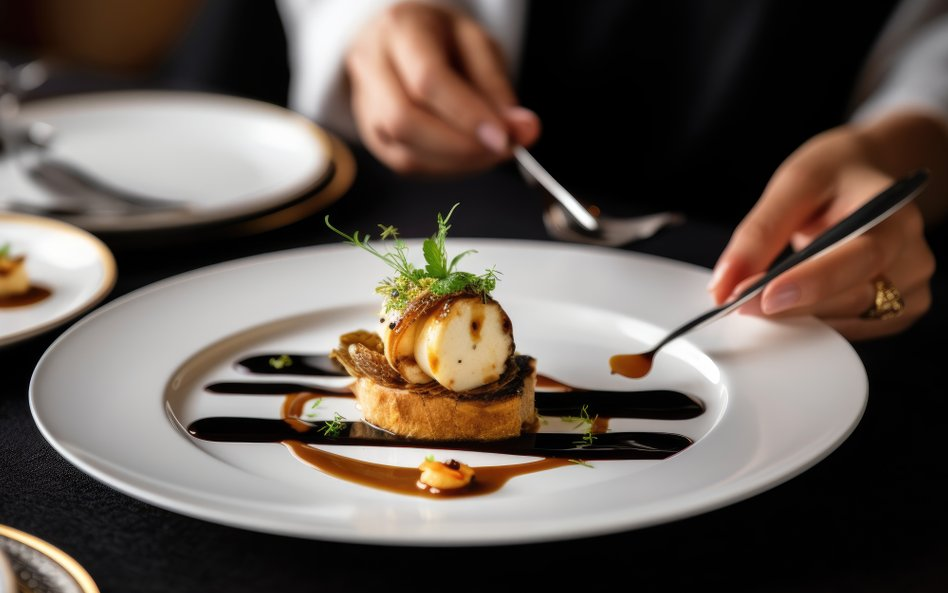
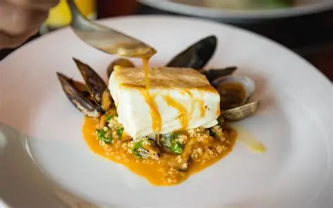
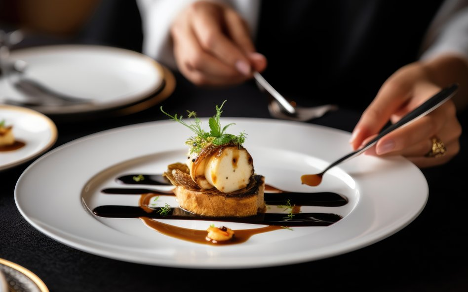
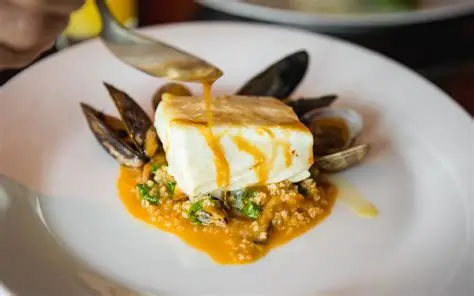

Najlepsza restauracja w sercu Żuław
Kameralny, zabytkowy obiekt z wyjątkową kuchnią i rodzinną atmosferą. Idealne miejsce na odpoczynek, rodzinny obiad lub bazę wypadową do Trójmiasta i Malborka.

 



O nas
Tradycja i nowoczesność
Willa Bistro to miejsce z duszą – łączymy tradycję z nowoczesnością, dbając o każdy detal wystroju i smaku. Nasza historia to lata doświadczeń, pasji i rodzinnej atmosfery.
- Lokalne produkty
- Rodzinna atmosfera
- Kuchnia regionalna
- Komfortowe pokoje